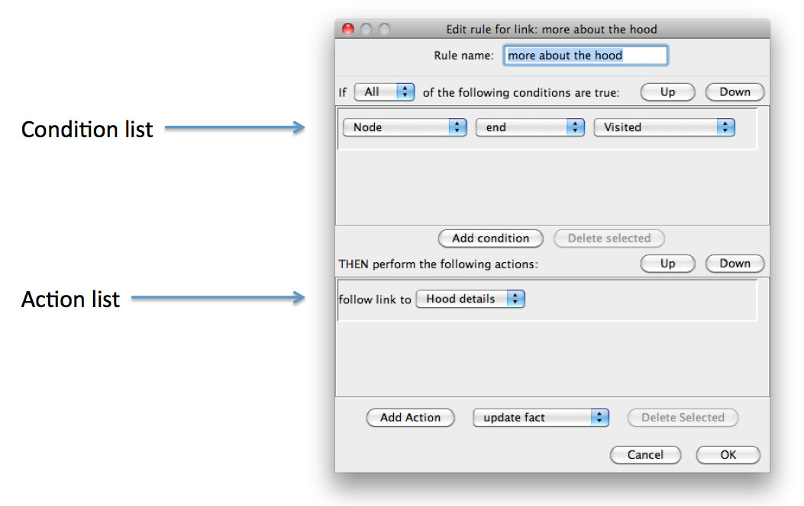
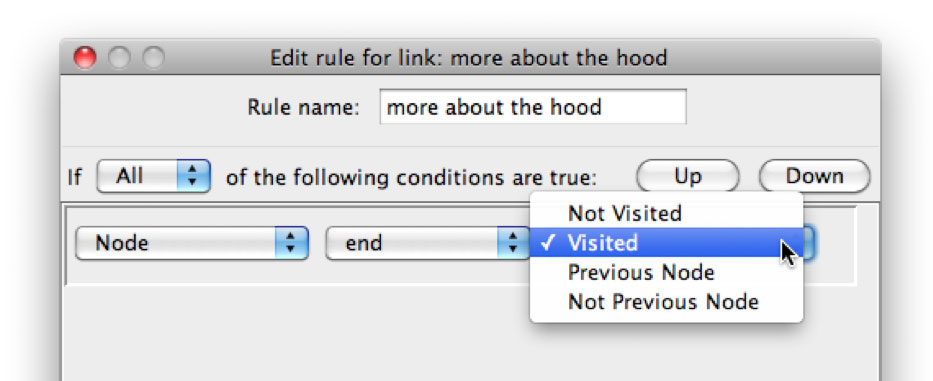
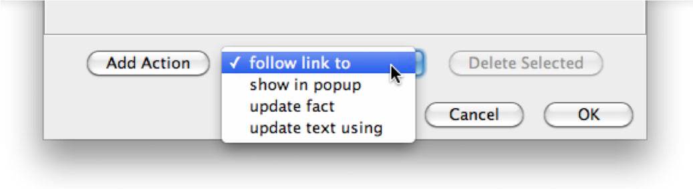

Rule editor
The rule editor displays the contents of a rule. Each rule has a name, and contains a list of conditions, and list of actions. Rules can be associated with links and nodes. A rule may be renamed simply by editing the name in the text field at the top of the editor.

When a rule is triggered, the conditions are evaluated in order. If the conditions are satisfied, then the actions are executed in order. The rule's conditions are considered to be satisfied if either all of the conditions are true, or any of the conditions are true, depending on the value selected in the pulldown menu above the condition list.
Conditions
A condition can be selected by clicking on the condition, and unselected by either selecting another condition, or clicking again on the currently selected condition. The currently selected condition can be moved up or down in the condition list using the Up and Down buttons.
Conditions can be added to a link by clicking on the Add Condition button in the toolbar. The new condition will be added after the currently selected condition, or at the end of the list if no condition is currently selected. The currently selected condition can be deleted by clicking on the Delete Selected button.

The type of condition, what the condition applies to, and the operator for the condition can all be changed by using the pulldown menus in the condition. Conditions can be applied to nodes, links, and facts. For nodes, the available operators are visited, not visited, previous, and not previous. For links, the available operators are followed and not followed. For conditions on facts, please see the Facts section.
Actions
An action can be selected by clicking on the action, and unselected by either selecting another action, or clicking again on the currently selected action. The currently selected action can be moved up or down in the action list using the Up and Down buttons.
Actions can be added to a link by clicking on the Add action button in the toolbar. The type of action added will correspond to the value selected in the pulldown menu to the right of the Add action button. The new action will be added after the currently selected action, or at the end of the list if no action is currently selected. The currently selected action can be deleted by clicking on the Delete Selected button.

The types of actions available include Follow link to, Show in popup, Update text, and Update fact. Follow link to is activated when a link is clicked, and takes the reader to the specified node. Show in popup shows the specified node in a popup, overlaid on top of the current node.
Note that when a rule is triggered depends on whether it is associated with a link or a node, and what type of actions are contained in the rule. For link rules, the Follow link to, Show popup in and Update fact actions are triggered when a link is clicked. The Update text action is triggered when a node is refreshed.
Node rules will be discussed in the Node Rules section. Update text and Update fact will be discussed in the Conditional Text and Facts sections.